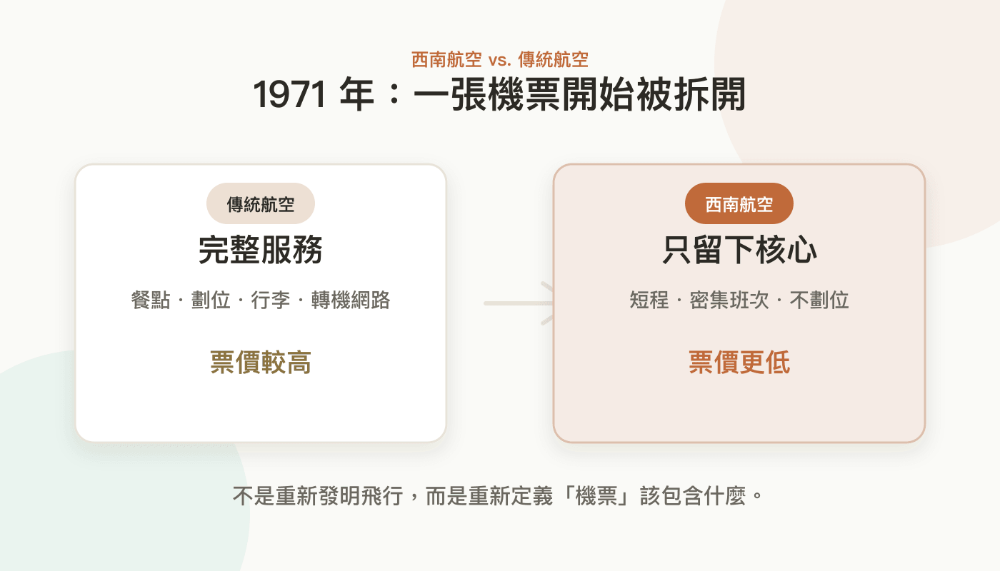
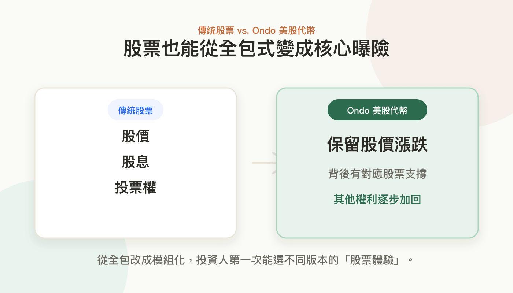
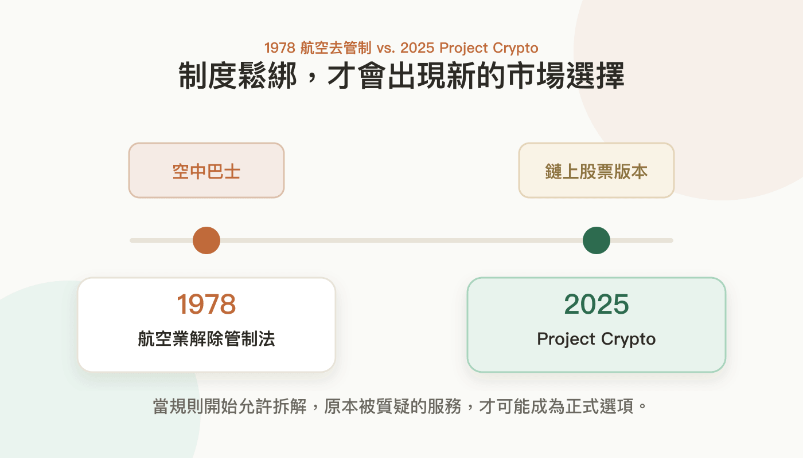

當股票開始像
廉航一樣拆開賣
從西南航空到 Ondo，看懂股票代幣的拆解邏輯
SCROLL ↓
從西南航空到 Ondo，看懂股票代幣的拆解邏輯
台北飛沖繩不到一小時。7,000 元的廉航和 12,000 元的傳統航空，你選哪個？對多數人來說，答案很直覺。但這個選擇在五十年前根本不存在。
1970 年代的美國，航空業受到民航委員會（CAB）高度管制。航線怎麼飛、票價怎麼訂，都是主管機關說了算。據說連機上三明治的大小都有規定。所有航空公司賣的都是同一種東西：被規範好的「完整機票」。

1971 年，西南航空正式營運。它主打德州境內航線，避開政府對跨州航線的管制。不提供豪華餐點、不劃位，只做短程密集航班。在其他業者眼裡，這不像航空公司，更像「飛在空中的巴士」。
1978 年，美國通過《航空業解除管制法》，西南航空順勢把這套模式推向全國。即便沒有完整的機上服務，只要價格夠低、班次夠密、能安全把人送到目的地，乘客仍然願意買單。
傳統航空也跟著改變。餐點、選位、托運行李，開始被拆成可以額外購買的選項。今天你飛沖繩能在 7,000 跟 12,000 之間選，正是這場拆解的結果。
現在，同樣的事正發生在股票上。Ondo Finance 掌握全球超過七成的美股代幣市場，管理規模突破 10 億美元，卻常被傳統金融人士質疑：這不是股票。
傳統股票像全包式機票：股價、股息、投票權，全都包在裡面。Ondo 的美股代幣更像廉航機票，只保留最核心的股價漲跌。
Ondo 不囤庫存。用戶下單時，它才透過券商 Alpaca 買進對應股票、即時鑄造代幣。投資人買賣的價格，幾乎和在美股券商下單一樣。

有人會問：有股價、沒股權，這不就是差價合約（CFD）嗎？不一樣。差價合約是你跟平台對賭，背後通常沒有真實股票。Ondo 的代幣背後有對應股票，由法律實體代為持有。更像基金或 ETF：買到的是股價，但不是完整股權。
沒有出現在股東名冊上，怎麼能叫股票？但很多散戶其實不在乎。他們不想參加股東會，只想要一個價格夠好、操作簡單、背後有資產支撐的投資工具。
Ondo 也沒有停在「追蹤股價」。今年四月，它與 Broadridge 合作推出代理投票機制，讓代幣持有人能依持有比例表達投票偏好，再由發行方代為投票。
這終究不是自己投票，也不是完整股東權利。但 Ondo 的優勢正在於此：它一開始就不是股票，不需要照傳統股票的模式設計。它從最基礎的股價開始，觀察市場需要什麼，一路把功能加回去。
傳統金融想複製這套做法，卻可能因為既有法規與制度包袱，很難自廢武功。Ondo 走的是加法：從最陽春的核心做起，看需求一塊塊補上。傳統金融走的是減法：想從全包版往下拆，但每拆一塊就撞一條法規。
西南航空能把廉航模式推向全美，不只靠乘客買單，更靠 1978 年的《航空業解除管制法》。制度鬆綁之後，「空中巴士」才真正變成航空市場的新選擇。
美國 SEC 主席 Paul Atkins 提出的 Project Crypto，很可能就是 Ondo 等待的廉航時刻。SEC 想主動調整規則，讓股票、基金等證券有機會在區塊鏈上發行和交易。

彭博社報導，SEC 準備推出「創新豁免」機制，可能允許第三方發行追蹤上市公司股價的代幣，即便不附帶投票權或股利等傳統股票權利。SEC 委員 Hester Peirce 隨即澄清，豁免範圍預計有限，只針對「同一證券的數位表徵」，暫不開放純粹追蹤價格的合成代幣。
SEC 不是要讓市場完全放飛，但規則已經開始鬆動。最後可能有兩種結果：一種是所有股票代幣都得補回傳統股票的完整功能，只是把金融搬上鏈。另一種是在投資人保護的前提下，讓市場探索使用者真正需要什麼。
如果是後者，Project Crypto 之於 Ondo，就會像 1978 年的法案之於西南航空。
西南航空不是取代了傳統航空，而是讓機票不再只有一種選擇。
Ondo 也不一定會取代股票，但它可能讓股票第一次出現不同版本。
選完之後，分享你的觀點
喜歡這種分析嗎？
從股票代幣、穩定幣到平台策略，用台灣讀者看得懂的語言，把複雜的產業變局說清楚。目前已有超過 2 萬位讀者訂閱。
免費訂閱區塊勢 →也可以直接付費支持，解鎖每週完整文章